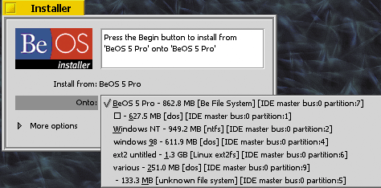
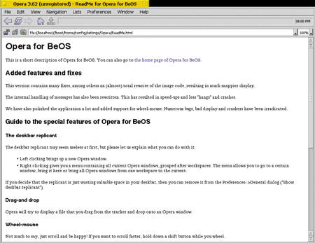
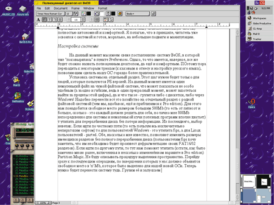

Александр Потемкин
a.potemkin@itmag.ru

Установка
BeOS 5 Personal Edition распространяется бесплатно и доступен в Интернете. Загружать из Интернета нужно не очень много - порядка 25 Мбайт. Если сравнить BeOS 5 PE с вариантом BeOS 5 Professional, который можно приобрести на отдельном диске, окажется, что в BeOS 5 PE наличествуют не все библиотеки, а общие несколько различаются; в BeOS 5 Pro есть дополнительная документация; в BeOS 5 PE отсутствует RealPlayer. Наконец, BeOS 5 PE устанавливается в файл, а не на отдельный раздел в "родную" файловую систему, и в систему не включена программа Partition Magic (специальная версия для BeOS, работающая под DOS) для безболезненного переразбиения диска.
В Интернете можно найти три файла: два из них - это база (для Windows и Linux). Первый оформлен в виде Install Shield и не требует особого мастерства. Второй -это стандартный для Linux архив (TAR+GZIP), который нужно развернуть поближе к корневому каталогу (например, в /boot) и создать загрузочную дискету с помощью уже готового скрипта.
Итак, все необходимые шаги сделаны, и осталось загрузить нашу систему. Счастливые обладатели Windows могут смело нажимать на иконку BeOS из меню "Пуск" (или Start), а пользователи Linux - набирать команду reboot с уже вставленной дискетой. Вот сейчас начинается самое интересное.
Уже с начала загрузки появляется графика. Буквально через 20 секунд (грузящихся с флоппи-дисковода просят немного подождать) попадаешь в нормальный графический интерфейс (если так можно назвать разрешение 640x480)! Далее раздастся приветствие (советую приглушить колонки), и появится окошечко "местного" браузера. Тут объясняют, что можно и нужно сделать на первых шагах, но все очевидные настройки я оставляю читателю и предлагаю перейти к более интересному - подстройке системы под себя.
Аналогом Windows-меню "Пуск" в BeOS выступает логотип операционной системы, по умолчанию расположенный в правом верхнем углу (через определенное время работы в этой ОС вы поймете и оцените преимущества столь странного ее расположения). Основные функции пока доступны именно через меню, выпадающее после нажатия на эту "кнопку". Так же, из привычного, доступно меню на рабочем столе и магическое сочетание клавиш "Ctrl+Alt+Delete", впрочем, уже отражающее специфику BeOS.
Специфика же ее заключается в том, что эта система объединила в себе все самое лучшее для простого пользователя из двух популярных ОС: *nix и MacOS. От первой BeOS унаследовала некоторые представления относительно устройства системы. От второй - действительно интуитивно понятный интерфейс. Так вот, возвращаясь к сочетанию клавиш "Ctrl+Alt+Delete": в появляющемся Team Monitor можно "убить" (для любителей Linux - это графический аналог kill 9, хотя имеется и привычный, консольный) любую команду (команда - некоторое общее с программой понятие, включающее в себя все потоки программы и все обслуживающиеся запросы), даже в том случае, если "This team is a component of the BeOS" (т.е. является частью ОС). (Только, "убив" input_server, не удивляйтесь, что ни мышка, ни клавиатура больше ни на что не реагируют, так как этот сервер отвечает за входные сигналы.)
Интерфейс BeOS сложно оценить однозначно: его нельзя назвать ни аскетичным, ни слишком уж красивым. Я охарактеризовал бы его как золотую середину между красотой, зазря пожирающей ресурсы компьютера, и совершенно полной скудностью во имя высокой производительности. Кроме того, как уже отмечалось выше, в этой ОС все достаточно понятно, и именно интуитивно понятно. Чего, например, стоят одни названия программ: ShowImage - не правда ли, несложно догадаться, для чего это предназначено? Диалоги между системой и пользователем также построены достаточно оригинально: так, при попытке печати без предустановленного принтера появится стандартная реплика, что оный неплохо было бы установить в системе, но вот варианты ответов будут в духе: "Да, конечно! Давно пора было это сделать" или "Нет, отвянь".
Кстати, о "железе". В большинстве случаев для работы данной ОС сразу после установки не понадобится дополнительно устанавливать никаких драйверов, что приятно радует. Надо только учесть, что, поскольку все драйверы на 90% пишутся самими разработчиками BeOS, то сказать, что этих самых драйверов очень много и они работают идеально для каждого оборудования, все же нельзя. Однако в большинстве случаев никаких "мудрствований" с железом не понадобится. Впрочем, уже пора переходить к тому, чтобы сделать нашу свежеустановленную систему полностью автономной и комфортной.
Настройка
Я надеюсь, что к этому моменту читатель уже успел "поковыряться" в пункте Preferences. Однако то, что имеется, наверное, все же будет сложно назвать полноценным десктопом, не говоря о комфорте. Поэтому пора переходить к некоторым трюкам (к каковым я отнесу и настройку русского языка).
Установка системы на отдельный раздел. Этот шаг нужен будет только тем, кто пользуется PE-версией. На данный момент есть один немаленький файл в чужой файловой системе, что не слишком удобно и не слишком гибко. Да и что такое - грузить систему либо с дискетки, либо через Windows! Надо перенести все это хозяйство на отдельный раздел с родной файловой системой и с отдельным загрузчиком. Для этого нам понадобится свободное место - не менее 500 Мбайт (сколько именно, это каждый должен решить для себя, но лично мне вполне хватает 800 Мбайт непосредственно для системы и набора полезных программ) и утилита для переразбиения диска без потери информации. Что касается последнего, выбор невелик. Для пользователей Windows это утилита fips, а для Linux - GNUparted. Обе программы, насколько мне известно, позволяют изменять размеры имеющихся разделов без полного переразбиения диска (пользователям fips хочу заметить, что им необходимо будет провести дефрагментацию своих FAT16/32 разделов). Если вы приобрели BeOS 5 Pro, поможет утилита Partition Magic.
Не буду описывать здесь процедуру выделения пространства, перейду сразу к последующим операциям. По окончании действий над диском на винчестере должно появиться свободное место в N Мбайт, выделенное для нашей новой ОС. Теперь нужно перенести туда систему. Загружаем ее (из файла) и запускаем Installer; согласившись с License Agreement, попадаем в саму программу, где в пункте onto можно выбрать, куда, собственно, ее устанавливать. Выбираем только что созданный раздел, соглашаемся на инициализацию (аналог форматирования) этого раздела и через очень короткое время наблюдаем за установкой на новый раздел.
|  |
| Рис. 1. Установка BeOS на отдельный раздел.
|
Установка - это по сути простое копирование всех файлов на новый раздел, но вот под конец у нас спросят - не хотим ли мы поставить загрузчик. Обладателям Windows 9x/Me можно отвечать положительно. Пользователям Windows NT придется сохранить Master Boot Record. Что касается пользователей Linux, то им просто надо будет (если это не сделано ранее) переставить LiLo на раздел, где стоит сама Linux, и указать, что ее надо загружать именно оттуда. Те, кто решил еще подумать над этим вопросом, могут пока отказаться и спокойно перезагрузить систему. После этого можно будет просто загрузить BeOS так же, как и из файла, - с помощью дискетки или загрузчика из-под DOS. Чтобы указать, какую же систему надо загрузить (ведь на этот момент у нас их будет две - одна в файле, а другая на разделе), в самом начале сразу же нажмите пробел. После этого вы попадете в раздел, позволяющий указать загрузочные установки, в том числе и откуда загружаться. Загрузив BeOS с раздела, дайте в терминале команду bootman. Тут вам опять предложат поставить загрузчик (надо заметить, кстати, что загрузчик очень неплохой). После всех этих манипуляций у нас есть точная копия системы на отдельном разделе с родной файловой системой, а потому первоначальный файл уже можно удалить.
Настройка русского языка. Для этого особых усилий не потребуется. Вся задача сводится к тому, чтобы достать русские True Type-шрифты и обозначить их в системе. Рассмотрим один из наиболее очевидных вариантов - взять шрифты из Windows ( %windir%\fonts\ ) и скопировать их в home/config/fonts/ttfonts (если такого каталога не существует, создайте его). После этого запускаем программу Fonts (из пункта меню Preferences), нажимаем Rescan и выбираем нужный нам шрифт в качестве системного по умолчанию. Совет тут можно дать следующий: в качестве Plain font - выбирайте Tahoma, Bold font - Tahoma bold, Fixed font - Courier New Cyr Italic. После этого в принципе можно перезагрузиться, чтобы все уже запущенные программы это восприняли, а можно (и теоретически это должно сработать) просто убить Tracker и Deskbar при помощи клавиш Ctrl+Alt+Delete и нажать после повторного их нажатия на появившуюся кнопку - Restart the Desktop.
В качестве теста подмонтируйте раздел с русскими именами и посмотрите на качество изображения, в том числе и русских символов. В других приложениях все немного иначе, а точнее, все достаточно просто - русский язык либо поддерживается (в этом случае достаточно будет в настройках поставить нужную кодировку и шрифт), либо нет (такой программой вы пользоваться не сможете). Если же в Windows вышеуказанные шрифты не обнаружены, то стоит поискать их в Интернете (начав при этом с сайта http://www.benews.ru).
Помимо возможности чтения русских символов, иногда возникает желание что-нибудь написать. Для этого нам надо настроить клавиатуру. С сайта http://www.bebits.com берем пакет bilingualkeymaps и, разархивировав его, помещаем полученные файлы в home/config/settings/keymap/. В свежеустановленной системе такого каталога быть не должно, но он создается после первого запуска программы Keymap из пункта меню Preferences. Затем повторно запускаем Keymap и в User maps выбираем нашу (советую AmRus). Теперь переключение между раскладками будет осуществляться с помощью клавиши Caps Lock.
Маленькие прелести
Заключаться эти прелести будут в работе в данной ОС, только с добавлением некоторых полезных программ. Хочу сразу заметить: для того, чтобы получить оные, надо иметь доступ в Интернет, так как BeOS, как и всякая другая ОС, отличная от Windows, не пользуется особой популярностью, а, стало быть, софт для нее надо искать самостоятельно. В нашем случае эта задача облегчается наличием специализированных серверов. Самый крупный и достаточно популярный среди них - это http://www.bebits.com, 99% описываемых здесь программ можно найти именно там.
Электронная почта. В этой категории существует, в общем, немало бесплатных программ, но, насколько мне известно, наиболее интересных, стабильных и работающих с русским языком две: Scooby и Mail-It. Хочу обратить внимание читателя на то, что на данный момент первая находится в стадии бета-тестирования и еще имеет номер версии 0.9, так что пока приемлемым почтовиком можно считать только Mail-It (версии 3.0).
Браузер. Штатно в системе установлен браузер с названием NetPositive; положительная его черта - то, что он понимает русский и различные кодировки. Отрицательная - он правильно показывает далеко не все сайты (а какие-то просто не показывает) и не поддерживает такой полезной вещи, как Java.
Для BeOS есть еще два браузера. Один из них - это Opera, которую выгодно отличает от штатного то, что бродить с ней по Интернету гораздо приятнее и удобнее, но вот только не русскоязычному населению (этот браузер если и удается заставить воспринимать русский язык, то с большими проблемами, и, насколько мне известно, только одну кодировку, а для других надо будет каждый раз глобально рыться в настройках). Кроме того, в момент написания статьи для нашей ОС существовала только shareware версия 3.62, которая через определенный период откажется работать без регистрации (а за регистрацию надо платить либо пользоваться не совсем честными методами, которые мы рассматривать не будем). Есть еще и третий браузер - BeZilla (портированная версия Mozilla). Однако этот браузер пока можно посоветовать лишь любителям экспериментировать, для обычного пользователя он пока сыроват. Кстати говоря, существует еще и порт lynx, но этот браузер не графический, а консоль не русифицирована, поэтому скорее всего пользоваться им будут лишь скучающие по родной *nix-среде.
|  |
| Рис. 2. Окно Opera for BeOS.
|
Музыка. Под музыкой в данном случае я имею в виду возможность воспроизведения компакт-дисков и файлов в формате MP3. И первое и второе возможно и в только что установленной системе без всяких дополнительных настроек и программ. Однако при воспроизведении достаточно большой фонотеки в формате MP3 достаточно удобна программа WinAmp в Windows (или XMMS в Linux). Аналог вышеуказанных есть и в BeOS, и зовут этот аналог CL-Amp (в BeOS 5 Pro эта программа установлена по умолчанию, но не выведена ни в одно меню; найти ее можно в домашнем каталоге). Работает она на основе mpg123 модуля (из *nix-мира), и качество воспроизводимого звука вполне приемлемо.
Офисные программы. Из бесплатного, серьезного и оцененного русскими пользователями ПО здесь есть только AbiWord. Но он не особо устойчив и предоставляет собой только текстовый процессор. Поддерживает ряд форматов, включая и формат Microsoft Word. Что касается графики, готовых качественных и серьезных решений пока не существует, однако была информация, что под BeOS перенесена библиотека gtk, а, стало быть, скоро мы имеем шанс увидеть среди прочего полезного софта достаточно мощный графический редактор GIMP. Из платного ПО есть офисный пакет под названием Gobe Productive - по сути полный аналог Microsoft Office, обеспечивающий совместимость в форматах Word и Excel (кроме того, он позволяет сохранять файлы в формате HTML, что уже никак не привязывает вас к платформе - ведь Web-браузер уж точно есть на большинстве платформ). Презентации же на данный момент могут сохраняться лишь как картинки. Обладатели диска BeOS 5 Pro смогут найти на нем ознакомительную версию этого продукта (без возможности сохранения сделанного).
|  |
| Рис. 3. На рабочем столе открыт текстовый редактор Gobe Productive (на втором плане - MP3-плейер CL-Amp).
|
Другое полезное ПО. Сюда хотелось бы отнести не попавшего ни в одну рубрику FTP-клиента NetPenguin, достаточно удобного и позволяющего проводить дозагрузку. Кроме того, для BeOS существуют и такие полезные вещи, как ICQ и IRC. Единственная проблема этих программ заключается в том, что первая (BeCQ, ICBM) еще не предоставляет всех функций (например, регистрации), а вторая (Baxter) не понимает русского языка.
Общесистемное ПО. Одна из несомненно полезных утилит - Uninstall. В BeOS есть своя процедура установки программ, но нет "цивилизованной" возможности их удаления. Для этого и была создана утилита, удаляющая программы по их логам, которые остаются после установки. Теперь можно уже и поэкспериментировать с разными неизвестными программами.
Второй по важности программой я бы назвал ProcessController, при помощи которой очень удобно обращаться с процессами. В частности, она позволяет посмотреть, что на данный момент потребляет так много ресурсов процессора, понизить или повысить приоритет данной программы, "вежливо попросить" ее выйти или просто убить всю команду (в терминах BeOS) или конкретный поток. Еще есть полезная вещь под названием FixLink, которая позволяет достаточно удобно "фиксить" "сломанные" (т.е. указывающие в никуда) ссылки.
Tips&Tricks
Практически все файлы настроек находятся в каталоге /boot/home/config/settings. Категорически не советую изменять системные файлы (файлы настроек, находящиеся вне каталога /boot/home), так как в случае неправильных настроек загрузка системы в Safe Mode (выбирается из меню загрузки, появляющегося после нажатия пробела в начале процесса загрузки) может не дать нужного эффекта - настройки, вызвавшие сбой, все равно будут загружены как системные, а значит, необходимые. Тем, кто ищет решение проблемы с железом, советую обратить внимание на каталог /boot/home/config/settings/kernel/drivers (и подкаталог sample), в которой хранятся настройки, управляющие работой ядра и драйверов. Именно там, к примеру, можно, раскомментировав строку (удалив символ #) "enable_shutdown true" в файле kernel и скопировав этот файл на уровень выше, заставить систему выключать компьютер на новых блоках, а не выводить сообщение, предлагающее это сделать самому. Формат этих файлов несложен и хорошо прокомментирован. К тому же, как я уже замечал, если при загрузке что-то пойдет не так, всегда можно будет загрузиться в Safe Mode и исправить ошибку.
Хочу еще обратить внимание читателя на файлы /boot/home/config/boot/UserBootscript и /boot/home/config/boot/UserShutdownScript, которые отвечают за запуск необходимых программ соответственно в начале загрузки системы и при ее останове. Чем может быть полезен первый файл, понятно - это аналог Автозагрузки в Windows; а вот польза второго заключается вот в чем. Те, кому кажется, что выключить или перезагрузить систему слишком просто (и это может произойти не совсем вовремя, при нажатии не туда, куда надо), могут вставить в этот файл следующую строку:
alert "This will shutdown your system" "OK" "Cancel"
После появления данной строки система, прежде чем начать выход (останов системы), выведет окошко, в котором будет содержаться сообщение "This will shutdown your system" и две кнопки - OK и Cancel. При нажатии Cancel выскочит второе окошко, сообщающее о том, что скрипт вернул ошибку, и при повторном нажатии Cancel система уже не будет пытаться выключиться или перезагрузиться.
Теперь о еще одной "полезности" - работе на нескольких "рабочих столах". Я думаю, что читатель уже запускал утилиту Workspaces, но, возможно, это показалось не очень удобным. В таком случае я предлагаю своего рода upgrade этой утилиты. Для этого нам понадобится программка WorkMeister. При запуске она убирает рамку с этого окна и снимает необходимость в постоянном наводе фокуса в Workspaces для манипуляции с окнами на рабочих столах (например, перенос окна с одного рабочего стола на другой). Работать с такой связкой уже гораздо удобнее.
Теперь о том, как сделать так, чтобы не было необходимости запускать вышеуказанные программы каждый раз вручную. Для этого в файл /boot/home/config/boot/UserBootscript нужно вставить следующие строки:
Workspaces & sleep 1s WorkMeister
В принципе строку посередине можно заменить любой другой, запускающей какую-либо программу (например, у меня стоит запуск ProcessController -- deskbar). Главное, чтобы между запуском этих двух программ был небольшой промежуток.
Общее впечатление о системе
В общем и целом работать в BeOS достаточно удобно. На данный момент в этой системе недостает не столь уж многого - полноценного браузера (но, возможно, скоро с этим уже не будет проблем), IRC- и ICQ-клиентов. Все эти проблемы, в общем, решаемы, чему еще способствует и то, что в эту ОС включен еще и полноценный компилятор C/C++ (в BeOS 5 PE - это файл BeOS5-DevTools.zip, в BeOS 5 Pro - это опция Development), несколько напоминающий Borland C++ 5.01. К тому же, по отзывам профессиональных программистов, API этой системы достаточно удобны и понятны, да и вообще программирование под BeOS считается удовольствием.
В кратком обзоре BeOS я не затронул многих аспектов работы в этой системе и не рассказал про множество полезных программ, включая и такое явление, как игры. Под BeOS есть и игрушки. Большинство из них перенесены из FSF-фонда, хотя есть и "фирменные", такие как Doom и Quake. Для этой платформы можно найти и эмуляторы для игрушек (есть и эмулятор ОС, а также портированный WINE - первый из них еще трудно отнести к разряду стабильных и работающих программ, а второй за ненадобностью не проверял).
Есть у BeOS и отрицательные стороны. Один из главных недостатков заключается в достаточно высоких системных требованиях. Для комфортной работы в BeOS 5 желательно иметь более 64 Мбайт оперативной памяти, более 600 Мбайт места на винчестере и частоту процессора порядка 300 МГц (естественно, что, чем больше ресурсов, тем лучше). Но такие требования вполне оправданы: сама система грузится за 20 -- 25 с, а быстродействие ее приятно радует. Вторая отрицательная сторона - не столь большое количество софта и крупных (по-настоящему необходимых) программных пакетов. В основном софт в BeOS попадает либо из мира *nix, либо пишется программистами-энтузиастами (нередко с использованием все того же GNU-софта).
В общем же, работа в данной ОС оставляет вполне приятные впечатления. В этой системе, несмотря на небольшое число разработчиков (около 70 человек), нет сколь-либо очевидных и нервирующих ошибок. Сама работа протекает достаточно плавно и спокойно. Зависание программы и чересчур большое потребление ресурсов одной программой можно просто не ощутить, так как на работе других программ это отразится не сильно (исключение, конечно, составляют программы типа Quake 2, которые физически потребляют большое количество ресурсов компьютера; впрочем, CL-Amp и при этом продолжает работать без изменений проигрываемого звука). Интерфейс BeOS не утомляет, а системные надписи иногда даже веселят. В общем и целом, можно сказать, что система продумана и имеет свою идеологию, позволяющую выделить эту ОС из ряда других.
Попробуйте поработать в BeOS, вам понравится!